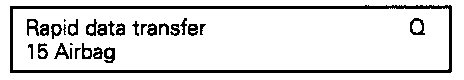
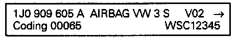
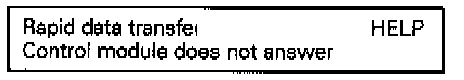
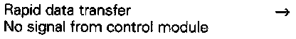
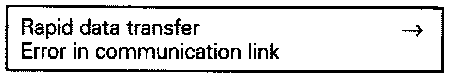
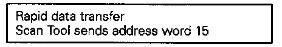

VAG 1551 Scan Tool (ST)
DTC = Diagnostic Trouble CodeDLC = Data-Link Connector (Diagnostic socket)
MIL = Malfunction Indicator Lamp
WARNING:
- Check the airbag system wiring by visual inspection only
- Do not check continuity or resistance of the airbag ignitor circuits.
- Switch off ignition before checking routing of wiring.
Connect VAG 1551 Scan Tool and Select Function:
Test Conditions:
- All fuses OK according to wiring diagram
- Battery voltage at least 9 V.

- Remove ashtray and slide cover for DLC to the left (arrow).
- Switch off ignition and connect VAG 1551 Scan Tool using VAG 1551/3 adapter harness.
V.A.G. Display:

Operating modes 1 and 2 are displayed alternately.
NOTE:
- If the display remains blank, check the voltage supply to the VAG 1551 Scan Tool using the applicable wiring diagram. Troubleshooting and Component Locations"
- Additional operating instructions can be printed out by pressing the HELP button on the VAG 1551 Scan Tool.
- The -> button advances the Scan Tool program sequence.
- The PRINT button switches the printer on (indicator light in button lights up).
Checking Control Module Version:
- Switch ignition on.
- Press button -1- for "Rapid data transfer" operating mode.
V.A.G. Display:

- Press buttons -1- and -5- to insert address word 'Airbag"
V.A.G. Display:

- Press -Q- button to confirm input..
V.A.G. Display:

(This is an example. For actual control model version check with a VW Parts Department):
- Top line of display: Part No. of control module System designation (AIRBAG VW3) Version number
- Bottom line of display: Code number = Dealer number (automatically stored in airbag control module when entering the system).
V.A.G. Display:
- Press -> button.
NOTE:
- If any of the following messages are displayed, the possible causes of the malfunction can be printed by pressing the HELP-button.
V.A.G. Display:

V.A.G. Display:
- The ignition must be switched on.
V.A.G. Display:

- Malfunctions have occurred at the start or during the program (external interference?).
V.A.G. Display:

- Check VAG 1551/3 adapter harness, voltage supply (B+) and Ground (GND) connections.
- After repairing the possible causes of the malfunction, press buttons-i-and -5-to insert address word 'Airbag" Press -Q- button to confirm input.
V.A.G. Display:

(After entering address word 15) Then indicated on display:
V.A.G. Display:

(This is an example. For actual airbag control module version see a VW Parts Department)
Functions:
01 - Check control module version
02 - Check DTC memory
O5 - Erase DTC memory
06 - End Output
07 - Code Control Module
O8 - Read Measuring Value Block
10 - Adaptation
NOTE:
- When pressing the HELP button a list of possible functions is printed out.
- Do not select additional functions that are printed out after pressing the HELP button.
- After the function was completed, the VAG 1551 Scan Tool returns to the following starting position: